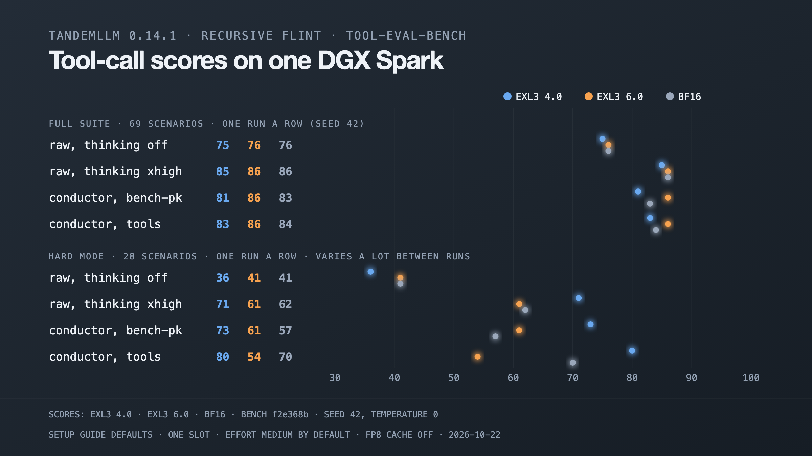

Flint¶
Recursive's Flint is a mixture-of-experts model for coding agents: 39.8B parameters, of which about 2.5B run for each token. Support ships in release 0.14.0. TandemLLM serves it from our EXL3 packs at 4.0 and 6.0 bits a weight or from Recursive's BF16 checkpoint, and drafts with the lookup, since the checkpoint has no draft layer.
Code: engine/models/flint/ (registry name flint, selected by FlintForCausalLM in config.json). Setup Guide entry: models/flint/model.yaml. Measurements: models/flint/measurements/2026-10-22-summary.json.
The model¶
| part | value |
|---|---|
| layers | 49: 2 dense, 47 mixture-of-experts |
| attention | 32 query heads, 4 KV heads of 128; q and k RMS-normed per head; a learned sink logit per query head (softmax_offset) |
| sliding layers | 35 layers see the last 513 positions, the row included, with rotary (theta 10,000); the engine keeps each in a ring of 640 rows |
| full layers | 14 layers see every position and use no positional encoding; KV 28,672 bytes a token, 7.0 GiB at 262,144 tokens |
| MLP | layers 0 and 1: dense SwiGLU, 6,144 wide. Layers 2 to 48: 256 SwiGLU experts, 512 wide, 6 a token by sigmoid score with a per-expert bias, plus one shared expert 1,024 wide |
| vocabulary | 150,144 tokens; four end tokens |
| context | 262,144 tokens |
A decode token reads 1.34 GB of the 4.0 pack and 2.00 GB of the 6.0 pack (PackIndex.decode_bytes).
Flint's router is sensitive to rounding. Its sigmoid scores sit close together, so one BF16 rounding of the residual stream changes the chosen experts for 2 % of tokens at layer 2 and for 46 % at layer 46. Two BF16 forwards of the same weights differ by KL 0.034 and agree on 92.9 % of top-1 on 8 rows of 1,024 tokens, and an fp32 forward against a BF16 one differs by KL 0.18. Read every KL on this page against that floor.
Profiles¶
DGX Spark, 2026-10-22. Decode step: tools/flint_check.py bench, one request, 512 greedy tokens, from its graph. Server: one request, 512 greedy tokens of code, thinking off, plain / lookup. Quality: the converter's model_diff against BF16 on 50 rows of 2,048 tokens of held-out docs (written after the model's training cutoff), and this engine against the converter's BF16 forward on 8 rows of 1,024 tokens of the same docs.
| profile | on disk | weights at load | decode step, tok/s | server code, tok/s | docs KL | docs top-1 | engine KL / top-1 |
|---|---|---|---|---|---|---|---|
flint-exl3-4.0 (default) |
20.6 GB | 19.25 GiB | 133.5 to 134.2 | 133.2 / 139.8 | 0.194 | 79.7 % | 0.160 / 80.5 % |
flint-exl3-6.0 |
30.5 GB | 28.49 GiB | 97.4 to 97.7 | 97.2 / 103.2 | 0.070 | 90.8 % | 0.052 / 91.6 % |
flint-bf16 |
80.4 GB | 75.53 GiB | 42.3 to 42.5 | 42.4 / 50.9 | 0 | 100 % | 0.034 / 92.9 % |
4.0 is the fast size and 6.0 the one to take when quality matters more than speed: 6.0 loses KL 0.070 on the docs and 4.0 loses 0.194, and 4.0 decodes 38 % faster. The BF16 row's engine column is the rounding floor: two BF16 forwards against each other. The packs are public, 0xBakeer/TandemLLM-Flint-EXL3-4.0 and 0xBakeer/TandemLLM-Flint-EXL3-6.0; each card has its code and wikitext-2 rows. The BF16 profile reads RecursiveSI/flint at revision 2a247be0 and keeps its window at 131,072 tokens so the Chat tab's sandbox keeps room beside it.
The EXL3 packs store every routed expert's up projection divided by 128, and quantization_config.expert_interm_div says so: the experts' |silu(gate) x up| reaches 260,000 in the top layers, past fp16. The engine multiplies the routing weights back.
Reasoning, effort and tools¶
Flint decides on each turn whether to reason, and opens its own <think> block as its first token; its template has no thinking switch. Thinking off puts an empty block after the generation prompt, so the answer starts at once (SRV-685); on a hard ask the model may still work through it in the visible answer. An effort level or a token budget closes the block at its cap with the closing phrase; on the server, effort low closed a hard ask's block at 1,045 tokens and a 64-token budget at 89, both counted from the model's own <think>.
Tool calls come in Flint's own form, <tool_call>NAME<arg_key>K</arg_key><arg_value>V</arg_value></tool_call> (tool_format argkey, SRV-683). The server types each value by the tool's schema and writes the calls back the same way, so a turn after a tool call resumes from the end anchor.
How the engine runs it¶
- The row kernels compute each row on its own, so a verify block's rows equal the decode step's bit for bit; the load-time self-check compares 24 rows.
- A sliding layer's keys live in a ring of 640 rows: the window's 512 earlier rows and the rows a verify block writes past the length, rounded up to 64. Its attention reads two 512-key chunks. A full layer reads its cache by position. The sink adds one term to the softmax's denominator.
- The decode step runs the shared expert on a second CUDA stream beside the router and the routed experts, and its Triton kernels launch as programmatic dependents (
FLINT_SIDE_STREAM,FLINT_PDL, both on). Same kernels, same bits: 4.0 went from 122.4 to 134.2 tok/s. - A prompt chunk runs on the flash kernel with the 4 KV heads as they are; the sink scales its output by sigmoid(lse - sink) in one pass. The routed experts run as one grouped GEMM over the chunk, 64 pairs an item.
- The server captures the verify graphs of widths 2 to 17 of the first context class at start, so the first requests do not pay for them.
Speed¶
One request through the server, 512 greedy tokens (the game file 2,048), thinking off, one fresh server a row, one run a cell, tok/s. Every drafted text is the plain one.
| profile | prose | code | chat | edit | copy | game file | |
|---|---|---|---|---|---|---|---|
flint-exl3-4.0 |
plain | 136.6 | 133.2 | 133.3 | 128.2 | 128.2 | 129.3 |
| lookup | 135.4 | 139.8 | 134.0 | 142.3 | 480.0 | 149.5 | |
flint-exl3-6.0 |
plain | 98.4 | 97.2 | 97.1 | 94.3 | 94.3 | 95.0 |
| lookup | 97.1 | 103.2 | 98.5 | 107.3 | 353.4 | 114.1 | |
flint-bf16 |
plain | 42.6 | 42.4 | 42.4 | 41.9 | 41.9 | 41.9 |
| lookup | 42.2 | 50.9 | 42.9 | 48.4 | 144.1 | 42.5 |
Prose with the lookup is 0.5 to 0.9 % under plain on 4.0 over three alternated pairs: it drafts 7 of 340 rounds, which together cost about what they save, and each plain round carries 21 µs of host work for the drafter.
Long prompts, 4.0, in the engine, 64 greedy tokens at each point:
| context | 4k | 16k | 64k | 128k | 256k |
|---|---|---|---|---|---|
| plain decode, tok/s | 123.0 | 101.7 | 61.0 | 39.5 | 23.0 |
| prompt reading, tok/s, from the start | 3,925 | 3,561 | 2,767 | 1,865 |
At 128k a decode step spends 17.8 of its 25.3 ms in the 14 full layers' attention: it reads 3.76 GB of keys and values at about 211 GB/s. A 4,096-token chunk at 128k spends 1,424 of its 2,180 ms there, on the flash kernel at about 87 TFLOPS. A 4,096-token prompt reads at 5,375 tok/s on 4.0, 5,045 on 6.0 and 4,319 on BF16.
The e4m3 KV cache (FLINT_KV_FP8, off)¶
With FLINT_KV_FP8=1 the 14 full layers keep each key and value as e4m3 codes with one fp32 scale a (head, token): 14,784 bytes a token instead of 28,672. The output is no longer the exact model's. The knob is off by default, and the exactness checks hold only with it off. The manifest names it flint-kvfp8, so its cache entries are never read by the exact cache.
To turn it on in the Setup Guide (the dashboard's #/setup), pick Flint, go to the Tools step and switch on "Long-context cache (FP8)" under Features. Then finish Review and Install, which restarts the engine. To turn it off, switch it off there and install again.
To turn it on from the command line, add this line at the end of ~/TandemLLM/run/ops/serve.env:
QWEN38_FLINT_KV_FP8=1
Then run ~/TandemLLM/bin/tandem restart. Check that it took: curl -s localhost:8000/health shows "kv_cache": "e4m3" under weights, and the engine log's load line says KV cache e4m3. To turn it off, delete the line and run tandem restart again; /health then shows "kv_cache": "bf16". Use one way or the other: a line in serve.env wins over the Setup Guide's switch.
Cost, 4.0, against the exact cache (tools/flint_check.py kvfp8). Each prompt is teacher-forced through 16-row verify blocks:
| prompt | KL mean | KL median | top-1 agree | perplexity, exact / e4m3 |
|---|---|---|---|---|
| converter bundle, from token 128 | 0.050 | 0.009 | 92.4 % | 26.99 / 26.94 |
| 32,768 tokens of one source file, last 1,024 | 0.070 | 0.005 | 93.8 % | 7.165 / 7.465 |
| 122,880 tokens of the same file, last 1,024 | 0.050 | 0.002 | 95.7 % | 4.053 / 4.132 |
Speed, 4.0, in the engine, 64 greedy tokens at each point:
| context | 64k | 128k | 256k |
|---|---|---|---|
| plain decode, exact cache, tok/s | 60.6 | 39.3 | 23.05 |
| plain decode, e4m3 cache, tok/s | 79.4 | 57.1 | 36.6 |
| prompt reading from the start, exact / e4m3, tok/s | 3,532 / 3,368 | 2,741 / 2,554 | 1,848 / 1,634 |
On 6.0 the 122,880-token row reads KL 0.047, 95.2 % top-1 agreement and perplexity 4.062 / 4.097, and plain decode goes from 52.0 to 66.1 tok/s at 64k and from 35.4 to 50.1 at 128k.
On 4.0, decode reads about half the bytes and runs 31 to 59 % faster. Prompt reading is 5 to 12 % slower, since every chunk decodes the cached rows to BF16. The state for a 263,168-token window drops from 26.5 to 23.0 GiB. We ran each row once. We also tried per-channel key factors (powers of two, exact on the scores) on the same prompts. They helped some rows and hurt others, and the medians did not move, so we do not ship them.
Tool calls¶
tool-eval-bench 2.8.1.dev13 (commit f2e368b), seed 42, temperature 0, one request at a time, one run a row (n=1), 2026-10-22, TandemLLM 0.14.1. Each pack ran the Setup Guide's defaults for Flint: one slot, effort medium by default (the shipped default, setup.md), conductor on, FP8 cache off, a restart before each row. The raw rows send their effort: thinking off or xhigh. The tools rows think at the server's medium, and the bench-pk rows at the level of each turn's class. BF16's window is 131,072 tokens. Score, then the time the row took:
| row | EXL3 4.0 | EXL3 6.0 | BF16 |
|---|---|---|---|
| full suite, 69 scenarios | |||
| raw, thinking off | 75 (2 min) | 76 (3.1 min) | 76 (4.7 min) |
| raw, thinking xhigh | 85 (4.7 min) | 86 (11 min) | 86 (21.5 min) |
conductor, bench-pk (effort by turn class) |
81 (5.1 min) | 86 (8.9 min) | 83 (16.8 min) |
conductor, tools (effort medium) |
83 (4.1 min) | 86 (6.3 min) | 84 (15.3 min) |
| hard mode, 28 scenarios | |||
| raw, thinking off | 36 (1.8 min) | 41 (2 min) | 41 (4.3 min) |
| raw, thinking xhigh | 71 (5.5 min) | 61 (8.6 min) | 62 (19.9 min) |
conductor, bench-pk (effort by turn class) |
73 (3.5 min) | 61 (5.8 min) | 57 (12.8 min) |
conductor, tools (effort medium) |
80 (2.2 min) | 54 (4.4 min) | 70 (12.8 min) |
Raw rows send X-Tandem: raw, so the model answers alone; thinking off is reasoning_effort: none. The conductor rows pin a profile with X-Tandem-Profile: tools is what the conductor picks for a client that offers tools, and bench-pk is a test profile we do not ship. Hard mode at n=1 varies a lot between runs, so we claim no ranking between the sizes. models/flint/measurements/2026-10-22-tool-eval-bench.json has every row with its misses. |
The conductor puts no note into Flint's prompts. Its notes go before the last message's <|im_end|>, and Flint's template ends no message with a token, so there is no place for them: no class package, effort sentence, rule or memory note went into the conductor rows above. What acted there is what needs no note: the effort level's thinking switch and budget, the loop guards and the tool-call checks. Since 0.14.2 Flint's adapter says so (conductor fit notes: false, server.md), and the decision rows read memory {mode: off, why: model_notes} instead of on with the error no_insertion_point (SRV-703).

Drafting¶
Flint has no draft layer, so the drafter is the lookup alone: a continuation of the request's own text, the corpus and the suffix store, cut by StairCut from the profile's price file (ops/prices/flint/). The price file holds the measured cost of a verify block by size for each context class, and the plain step's cost for each class. After a round with no draft, the next 1, 2, 4, then 8 rounds take the plain step without looking (FLINT_ANCHOR_BACKOFF, FLINT_LOOK_BACKOFF). A verify block reads the KV once, so the lookup pays more at long context: behind a 124,000-token prompt of code, 4.0 ran a copy ask at 79.5 tok/s against 41.3 plain and an edit ask at 129.7 against 42.4, with the same text.
Verify blocks of 1 / 2 / 4 / 8 / 16 rows on 4.0, ms: 7.84 / 9.71 / 13.13 / 17.93 / 25.64 at 2k, 16.27 / 19.24 / 23.59 / 33.39 / 52.93 at 64k, 25.12 / 28.55 / 34.56 / 48.37 / 83.43 at 128k.
Not supported yet¶
- A draft head. A head we trained on the model's own outputs reached 21 % depth-1 acceptance on held-out text; StairCut's prices say it needs about 80 % for 1.4 times plain at 2k and 55 % at 128k.
- NVFP4. Our round-to-nearest NVFP4 pack lost KL 0.63 against BF16, too much to ship.
Checks¶
tests/test_flint.py: the config, the reference forward against a plain transcription of the model, the row kernels against their references, the prompt attention with sinks and the window, and a tiny random Flint through the engine against the reference and against itself (decode, verify blocks, commit).tools/flint_check.py:engineandcmpagainst a converter bundle,bench,staircaseandpricesfor the price files.- The converter's forward was checked against a plain fp32 implementation of the published model before the conversion: per layer within fp16 noise on a tiny random Flint, and all 49 real layers at cosine 0.99998 or better.